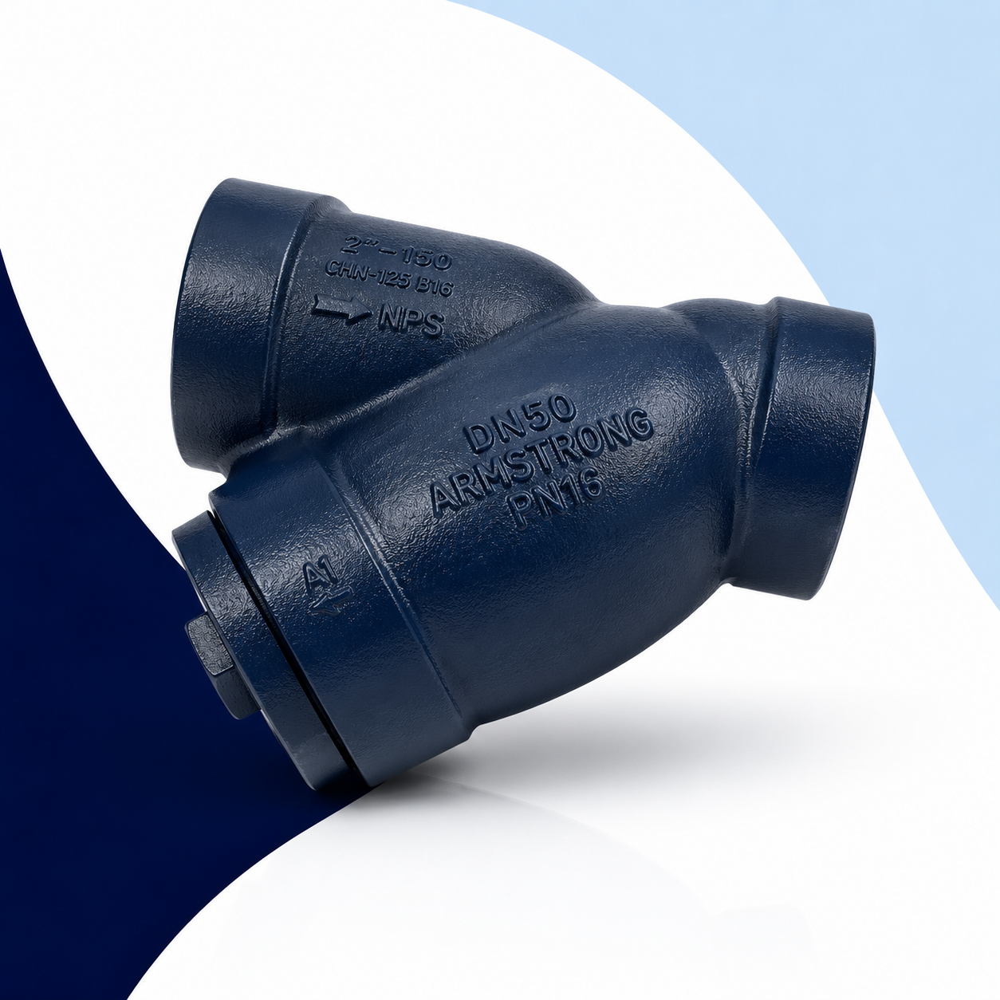
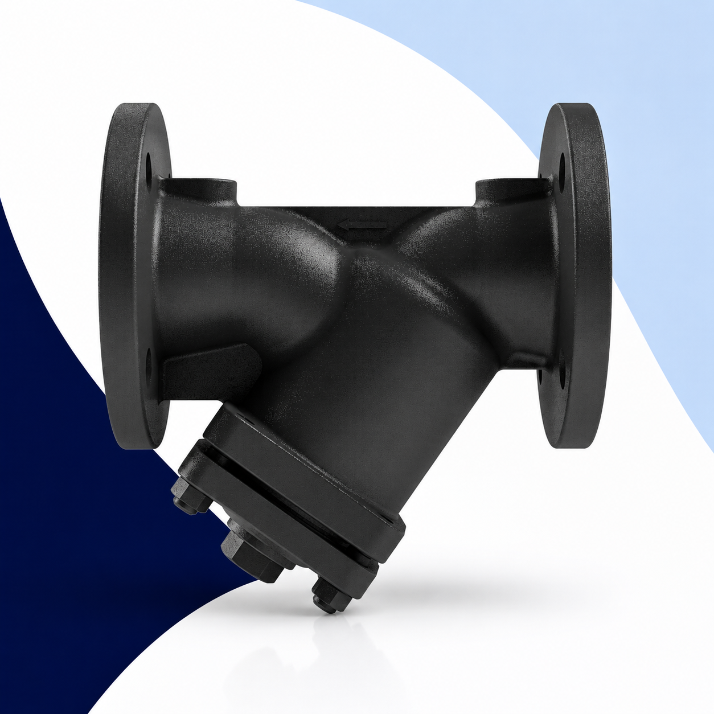
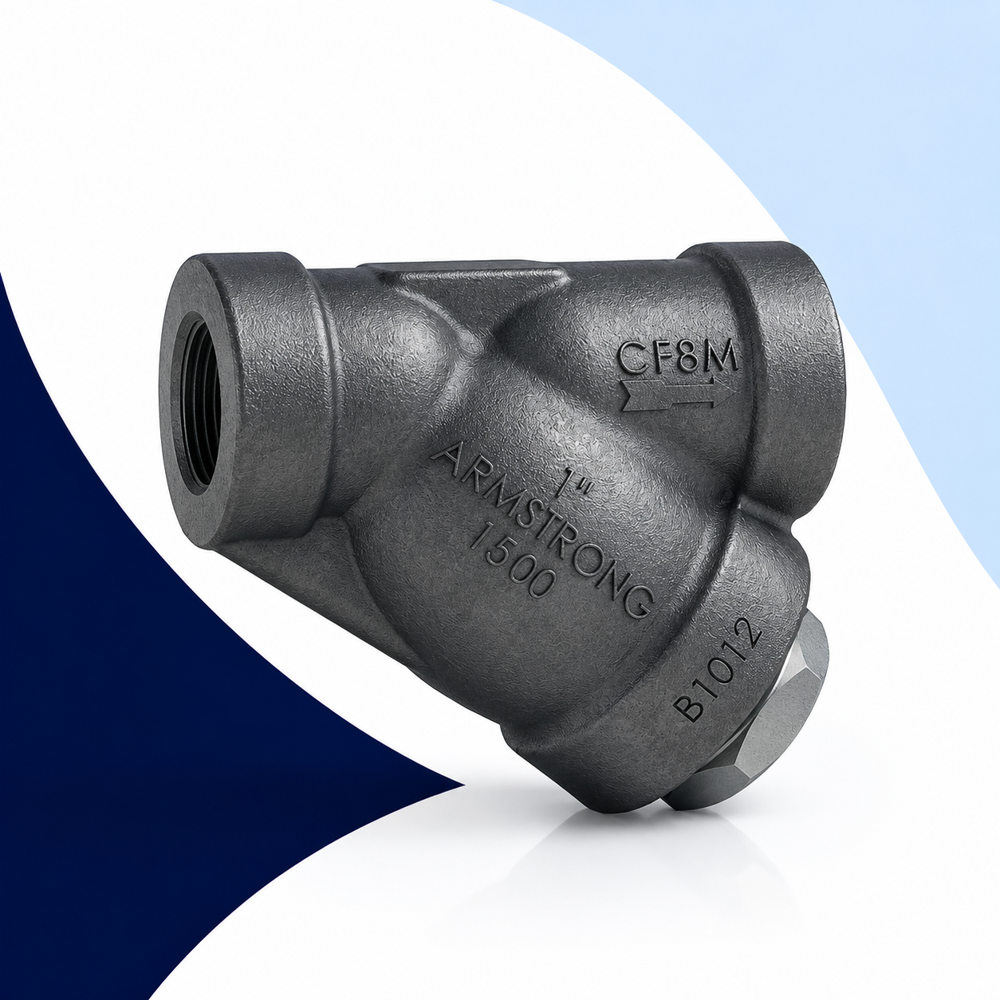
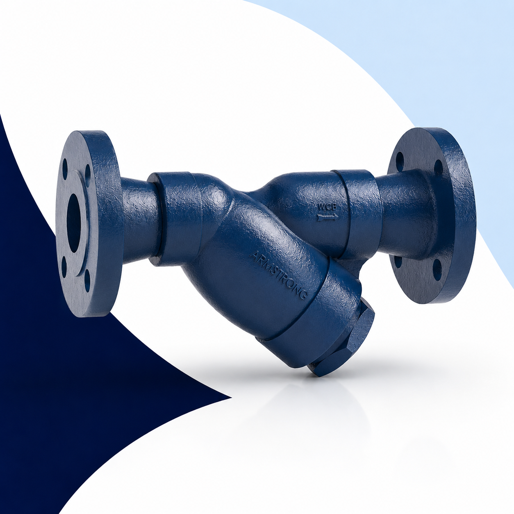

Filtros Industriales
Filtros Tipo "Y" para la Industria
Un filtro tipo Y industrial es un dispositivo instalado en línea en una tubería cuya función es retener partículas sólidas —óxido, incrustaciones, rebabas de soldadura, arenas y sedimentos— antes de que lleguen a los equipos críticos del sistema. Su diseño en forma de "Y" permite que el cedazo de retención quede inclinado respecto a la dirección del flujo, minimizando la caída de presión del sistema mientras ejerce una filtración efectiva.
La ausencia de un filtro tipo Y en la línea es una de las causas más frecuentes de falla prematura de válvulas, trampas de vapor, juntas rotativas, bombas e intercambiadores de calor. Partículas tan pequeñas como 0.4 mm son suficientes para dañar el asiento de una trampa termodinámica o bloquear el piloto de un regulador de presión.
En Defany Industrial distribuimos filtros tipo Y de Armstrong International, De-Wit y Watson McDaniel, cubriendo todo el rango de presiones, temperaturas, materiales y conexiones requeridos por la industria mexicana.
Las partículas abrasivas erosionan las superficies de cierre de válvulas y trampas, causando fugas internas.
Una sola partícula puede obstruir el orificio de un piloto o una tobera calibrada, inutilizando el equipo.
Los sólidos en suspensión incrementan la energía cinética de los transitorios hidráulicos.
Un equipo dañado por suciedad implica tiempo de paro, costo de reparación y pérdida de producción.
¿Por Qué Elegir Defany Industrial?
Somos distribuidores especializados con existencias, refacciones y soporte técnico para todas las marcas que manejamos.
Distribuidor Autorizado Armstrong
Distribuimos la línea completa de filtros tipo Y Armstrong International: Series CA, ESY, E y CB, con acceso a toda la línea de productos y soporte técnico de la marca.
Existencias en México
Mantenemos inventario de los modelos y tamaños más demandados para entrega inmediata. Reducimos los tiempos de paro de nuestros clientes con disponibilidad de stock local.
Refacciones Disponibles
Cedazos de reemplazo, tapones de limpieza y componentes internos para todas las series que distribuimos. Sin necesidad de importar cuando el cedazo requiere reemplazo.
Asesoría Técnica Especializada
Nuestro equipo técnico le ayuda a seleccionar el filtro correcto según fluido, presión, temperatura, tamaño de línea y material requerido. Selección sin costo de asesoría.
Entrega Nacional
Atendemos pedidos en toda la República Mexicana. Envíos por paquetería exprés o servicio de mensajería para proyectos urgentes con seguimiento de embarque.
Tres Marcas en un Solo Proveedor
Armstrong, De-Wit y Watson McDaniel en un solo proveedor. Cubrimos cualquier aplicación industrial con las marcas correctas para cada especificación de proceso.
Filtro Tipo Y Serie CA — El Estándar de la Industria
La Serie CA de Armstrong es el filtro tipo Y de referencia para aplicaciones industriales de vapor, condensado, agua y aire comprimido. Su cuerpo de hierro fundido de alta resistencia, combinado con un cedazo de acero inoxidable, ofrece décadas de operación confiable en las condiciones más exigentes de la industria.

Construcción y Principio de Operación
El filtro Serie CA funciona mediante un cedazo cónico de acero inoxidable instalado en el cuerpo en forma de "Y" con un ángulo de 45° respecto a la dirección del flujo. El fluido entra por la conexión lateral, pasa a través del cedazo —que retiene las partículas sólidas en el interior de la canastilla— y sale por la conexión en línea hacia los equipos aguas abajo.
El cedazo puede retirarse para limpieza o reemplazo a través del tapón de acceso inferior, sin necesidad de desmontar el filtro de la tubería. Esta característica es fundamental para el mantenimiento en línea durante paros programados.
| Parámetro | Especificación |
|---|---|
| Material del cuerpo | Hierro fundido ASTM A-126 Clase B |
| Material del cedazo | Acero inoxidable 304 (estándar) |
| Presión máxima (vapor) | 125 PSI (8.6 bar) |
| Temperatura máxima (vapor) | 353°F / 178°C |
| Presión máxima (agua/aire) | 250 PSI (17.2 bar) |
| Temperatura máxima (agua) | 450°F / 232°C |
| Tamaños NPT disponibles | ½" · ¾" · 1" · 1¼" · 1½" · 2" |
| Tamaños bridados disponibles | 1" · 1½" · 2" · 2½" · 3" · 4" |
| Malla del cedazo estándar | 20 mallas (0.84 mm apertura) |
| Malla cedazo opcional | 40 mallas (0.42 mm), 100 mallas |
| Tipo de conexión | NPT roscado o bridado ANSI 125/250 |
| Peso aprox. (1" NPT) | ~1.6 kg |
Aplicaciones de la Serie CA
¿Por Qué Instalar un Filtro Antes del Equipo?
El filtro es el componente más económico del sistema y el que protege los equipos de mayor valor. Un filtro correctamente instalado y mantenido extiende la vida útil de todos los equipos aguas abajo.
El filtro tipo Y es el elemento de protección más económico del sistema. Un filtro de 100 dólares puede proteger una trampa o válvula de 1,000 dólares.
La limpieza periódica del cedazo es planificable y económica. El reemplazo de un equipo dañado por partículas no lo es.
El cedazo del filtro tipo Y puede inspeccionarse y limpiarse durante el mantenimiento preventivo sin necesidad de desmontar el equipo principal aguas abajo.

Serie ESY — Filtro Tipo Y de Alta Capacidad
La Serie ESY de Armstrong está diseñada para aplicaciones industriales que requieren mayor presión de trabajo, mayor caudal o materiales de mayor resistencia que la Serie CA estándar. Incluye tres variantes (ESY-1, ESY-2 y ESY-3) que cubren desde servicio general de alta presión hasta procesos con fluidos agresivos.
Cuerpo de acero al carbón ASTM A216-WCB. Para vapor, condensado y agua a presiones hasta 300 PSI (20.7 bar) y temperaturas hasta 600°F (316°C). Conexiones bridadas ANSI 150 lb en tamaños de 1" a 8". Cedazo de acero inoxidable 304 estándar, con opciones de mayor fineza.
Cuerpo de acero al carbón de alta resistencia para presiones hasta 600 PSI (41.4 bar). Bridas ANSI 300 lb. Diseñado para vapor sobrecalentado, sistemas de alta presión y procesos de proceso donde la Serie ESY-1 no alcanza la presión requerida. Tamaños de 1" a 6".
Variante de mayor presión de la familia ESY con cuerpo de acero al carbón y bridas ANSI 600 lb. Cubre aplicaciones hasta 1,500 PSI (103 bar) en tamaños de 1" a 4". Para sistemas de vapor de alta presión, procesos petroquímicos y aplicaciones donde las otras series no son suficientes.
Características generales Serie ESY
Serie E — Acero Inoxidable CF8M (316)
La Serie E de Armstrong es la solución para aplicaciones donde se requiere resistencia a la corrosión que va más allá de lo que ofrece el hierro fundido o el acero al carbón. Fabricada en acero inoxidable CF8M (equivalente a AISI 316), es la elección correcta para la industria farmacéutica, alimentaria, química fina y procesos con fluidos levemente agresivos.
El acero inoxidable 316 (CF8M) agrega molibdeno (2-3%) respecto al 304/CF8, lo que mejora significativamente la resistencia a los cloruros, ácidos orgánicos y ambientes oxidantes. Es compatible con los requisitos de limpieza CIP y esterilización SIP en plantas farmacéuticas y de alimentos.
Aplicaciones principales


Serie CB — Alta Presión PN40 / ANSI 300
La Serie CB es el filtro tipo Y de Armstrong diseñado para los servicios industriales de mayor presión: vapor a alta presión, procesos petroquímicos, sistemas de vapor industrial pesado y cualquier aplicación donde las series CA o E no alcanzan la presión requerida.
Su cuerpo de acero fundido de alta resistencia soporta presiones de trabajo hasta 720 PSI (49.6 bar) con temperatura de diseño hasta 752°F (400°C). Disponible tanto en configuración roscada (NPT) como en conexiones bridadas, cubriendo los estándares PN40 europeo y ANSI 300 americano para máxima versatilidad de instalación.
Ventajas de la Serie CB
Comparativa de Series Armstrong
Use esta tabla para identificar la serie correcta según las condiciones de su proceso.
| Serie | Material cuerpo | Presión máx. | Temperatura máx. | Conexiones | Aplicación principal |
|---|---|---|---|---|---|
| CA | Hierro fundido ASTM A126-B | 125 PSI vapor 250 PSI agua |
353°F / 178°C 450°F / 232°C agua |
NPT ½"–2" Bridado 1"–4" ANSI 125 |
Vapor general, condensado, agua, aire |
| ESY-1 | Acero al carbón A216-WCB | 300 PSI | 600°F / 316°C | Bridado ANSI 150 lb — 1" a 8" | Vapor alta presión, agua, condensado |
| ESY-2 | Acero al carbón A216-WCB | 600 PSI | 600°F / 316°C | Bridado ANSI 300 lb — 1" a 6" | Vapor alta presión industrial |
| ESY-3 | Acero al carbón A216-WCB | 1,500 PSI | 600°F / 316°C | Bridado ANSI 600 lb — 1" a 4" | Vapor muy alta presión, petroquímica |
| E | Acero inox. CF8M (316) | 150 PSI vapor | 600°F / 316°C | NPT ½"–2" / Bridado ANSI 150 1"–3" | Farmacéutica, alimentos, química fina |
| CB | Acero fundido A216-WCB | 720 PSI | 752°F / 400°C | NPT ½"–2" / ANSI 300 / PN40 1"–4" | Vapor alta presión, petroquímica, proceso |
También Distribuimos: De-Wit y Watson McDaniel
Además de la línea completa de Armstrong, Defany Industrial distribuye filtros tipo Y de De-Wit y Watson McDaniel, ampliando las opciones de especificación para cualquier proyecto industrial.
Armstrong International
Distribuidor AutorizadoLa línea de referencia en filtros tipo Y para vapor industrial. Décadas de experiencia, soporte técnico y disponibilidad de refacciones en México.
- Serie CAHierro fundido · ½"–2" NPT / 1"–4" bridado · 125 PSI vapor
- Serie ESY-1Acero carbón · ANSI 150 lb · 300 PSI · 1"–8"
- Serie ESY-2Acero carbón · ANSI 300 lb · 600 PSI · 1"–6"
- Serie ESY-3Acero carbón · ANSI 600 lb · 1,500 PSI · 1"–4"
- Serie EAcero inox. CF8M 316 · ½"–2" NPT / 1"–3" bridado
- Serie CBAcero fundido · NPT / ANSI 300 / PN40 · 720 PSI
De-Wit
Distribuidor en MéxicoDefany Industrial distribuye la línea De-Wit de filtros tipo Y, una alternativa técnica de alta calidad con presencia en la industria mexicana de vapor y condensado.
- Serie ATCuerpo de hierro fundido · Servicio general de vapor y agua · Rango estándar de presiones y temperaturas
- Serie YS12Filtro tipo Y de acero inoxidable para procesos sanitarios y fluidos corrosivos · Amplio rango de tamaños
- Serie FY80TFiltro tipo Y bridado de alta capacidad · Acero al carbón · Para sistemas de vapor de media y alta presión
- Serie FY80SVariante en acero inoxidable de la FY80T para procesos con fluidos corrosivos a media/alta presión
Watson McDaniel
Distribuidor en MéxicoWatson McDaniel es una marca de reconocida trayectoria en América en equipos para sistemas de vapor. Sus filtros tipo Y son ampliamente utilizados en la industria de alimentos, papel, textil y procesos generales.
- Serie CIYCuerpo de hierro fundido · Conexiones roscadas NPT · Para vapor, condensado y agua a presiones estándar
- Serie CSYCuerpo de acero al carbón fundido ASTM A216-WCB · Bridado ANSI 150 y 300 · Mayor presión y temperatura
- Serie SSYFiltro tipo Y de acero inoxidable 316 (CF8M) · Para aplicaciones farmacéuticas, alimentarias y químicas corrosivas
- Serie ATFFiltro tipo Y de acero fundido para alta temperatura y presión · Equivalente técnico a la Serie CB de Armstrong
Selecciona tu Filtro Tipo Y
Completa los datos de tu proceso y genera la especificación técnica para solicitar cotización.
Mantenimiento del Filtro Tipo Y
Un filtro tipo Y es un equipo de mantenimiento simple y económico. Seguir las buenas prácticas de inspección y limpieza garantiza su funcionamiento óptimo y la protección continua de los equipos aguas abajo.
Frecuencia de limpieza
No existe una frecuencia fija universal: depende del nivel de contaminación del fluido y del resultado de las inspecciones previas. La práctica recomendada es inspeccionarlo en cada mantenimiento preventivo programado del sistema (generalmente cada 3-6 meses en la primera etapa de operación de una instalación nueva) y ajustar la frecuencia según el estado del cedazo encontrado. Sistemas con alto contenido de óxido o incrustaciones requieren mayor frecuencia en las primeras semanas de operación.
Cómo inspeccionar el cedazo
Para inspeccionar el cedazo: (1) Cerrar las válvulas de seccionamiento aguas arriba y aguas abajo del filtro; (2) Despresurizar la sección usando el drenaje disponible; (3) Retirar el tapón de acceso del cedazo (rosca NPT en la parte inferior del cuerpo); (4) Extraer el cedazo cónico con cuidado; (5) Inspeccionar visualmente el cedazo: verificar porcentaje de obstrucción, presencia de material extraño y estado del alambre de la malla. Un cedazo con más del 50% de su área libre obstruida debe limpiarse o reemplazarse inmediatamente.
Cómo limpiar el cedazo
Limpiar el cedazo con agua limpia y un cepillo suave en la dirección opuesta al flujo (de adentro hacia afuera para remover las partículas atrapadas). Para obstrucciones resistentes, usar aire comprimido o ultrasonido. No usar cepillos metálicos que puedan dañar el tejido del cedazo. Si el cedazo presenta roturas, perforaciones o deformaciones, debe reemplazarse inmediatamente ya que un cedazo dañado no protege los equipos aguas abajo. Reinstalar con un empaque nuevo en buen estado.
Cómo detectar obstrucción
La señal más confiable de obstrucción es una caída de presión diferencial mayor a la normal entre la entrada y la salida del filtro. Instalar manómetros antes y después del filtro permite monitorear continuo. También pueden aparecer: reducción del caudal en el proceso, cambios en el rendimiento de los equipos aguas abajo o alarmas de presión baja en el sistema. Una caída de presión diferencial de 5-10 PSI sobre la de diseño es señal de que el cedazo necesita limpieza.
Cuándo reemplazar el cedazo
El cedazo debe reemplazarse cuando: (1) Presenta roturas, agujeros o deformaciones visibles; (2) No puede limpiarse completamente y sigue obstruido; (3) El material del cedazo está corroído por el fluido de proceso; (4) El tamaño de malla original ya no es adecuado para las condiciones actuales del fluido. Mantener cedazos de reposición en almacén es una práctica recomendada para garantizar la disponibilidad inmediata en caso de reemplazo urgente.
Buenas prácticas de instalación
Para maximizar la vida útil del filtro y la efectividad de la filtración: instalar siempre con el tapón del cedazo apuntando hacia abajo (posición vertical u horizontal con tapón hacia abajo) para facilitar el drenaje y la limpieza. En vapor, instalar aguas arriba de trampas, válvulas y reguladores. En agua, instalar antes de bombas y medidores. Asegurar que los empaques de las tapas estén en buen estado en cada reinstalación. Usar herramienta adecuada para el apriete del tapón de acceso.
Preguntas Frecuentes sobre Filtros Tipo Y
Un filtro tipo Y es un dispositivo de línea para retención de partículas sólidas en tuberías industriales. Su nombre se debe a la forma característica del cuerpo, que recuerda a la letra "Y": el fluido entra por una de las ramas, pasa por el cedazo ubicado en la rama inclinada y sale por la rama principal. Esta geometría permite que el cedazo quede a 45° respecto al eje de flujo, minimizando la caída de presión mientras ejerce una filtración efectiva. Es la configuración más utilizada en instalaciones de vapor, agua y aire comprimido en la industria.
Los filtros tipo Y aplican para una gran variedad de fluidos industriales: vapor saturado y sobrecalentado, condensado de vapor, agua fría y caliente, agua purificada, agua para inyección, aire comprimido, gas combustible (natural, LP, nitrógeno), aceite térmico y la mayoría de fluidos de proceso no altamente corrosivos. Para fluidos fuertemente corrosivos (ácidos concentrados, cloro, caustico concentrado) se requiere verificar la compatibilidad del material del cuerpo y el cedazo con el fluido específico. La Serie E de acero inoxidable amplía el rango de compatibilidad química.
El filtro tipo Y debe instalarse siempre aguas arriba del equipo que se desea proteger: válvulas de control, trampas de vapor, reguladores de presión, bombas, medidores de flujo, intercambiadores de calor y juntas rotativas. Se instala lo más cerca posible del equipo a proteger, con el tapón del cedazo en posición accesible para mantenimiento (preferentemente hacia abajo o lateral). En sistemas de vapor, el filtro debe instalarse después del separador de vapor y antes de la primera válvula de control de línea.
La diferencia principal es el material del cuerpo y su campo de aplicación. La Serie CA de hierro fundido es la solución estándar para la mayoría de las aplicaciones industriales: vapor, condensado, agua y aire a presiones hasta 125 PSI para vapor y 250 PSI para agua. Es la más económica y la más utilizada. La Serie E de acero inoxidable CF8M (316) está diseñada para aplicaciones donde se requiere resistencia a la corrosión: industria farmacéutica, alimentaria, química fina, agua purificada, vapor limpio o fluidos que no son compatibles con el hierro fundido. Su costo es mayor pero es imprescindible en esas industrias.
El cedazo debe cambiarse cuando: (1) Presenta roturas, agujeros o perforaciones visibles que comprometen la filtración; (2) Está tan obstruido que no puede limpiarse eficientemente; (3) El material del cedazo está corroído o deteriorado por el fluido; (4) Ha superado las inspecciones de mantenimiento sin ser reemplazado por un período excesivo. Un cedazo roto que pasa partículas es peor que no tener filtro, ya que da una falsa sensación de protección. Mantener cedazos de repuesto en el almacén es una práctica recomendada.
El tamaño de malla depende del tamaño de partícula que se desea retener y de los equipos a proteger. El cedazo estándar de 20 mallas (apertura de 0.84 mm) protege efectivamente trampas de vapor, válvulas y reguladores de presión de las partículas más comunes (óxido, incrustaciones, rebabas). El cedazo de 40 mallas (0.42 mm) ofrece mayor retención y es preferible para equipos más sensibles como medidores de flujo, inyectores y equipos de instrumentación. El cedazo de 100 mallas es para aplicaciones de ultra-filtración donde se requiere retener partículas muy pequeñas, pero genera mayor caída de presión y requiere limpieza más frecuente.
Un cedazo obstruido genera una caída de presión diferencial creciente que reduce el caudal disponible para los equipos aguas abajo. En sistemas de vapor, esto puede impedir que las trampas y válvulas de control operen correctamente. En bombas, puede generar cavitación por presión insuficiente en la succión. En el caso extremo, un cedazo muy obstruido puede colapsar estructuralmente bajo la presión diferencial, romperse y dejar pasar las partículas acumuladas en un solo pulso hacia los equipos, causando daños severos inmediatos. Por eso es tan importante la inspección y limpieza periódica.
La Serie CA tiene cuerpo de hierro fundido y está disponible con conexiones NPT roscadas (hasta 2") y bridadas ANSI 125 (hasta 4"), con presión máxima de 125 PSI para vapor y 250 PSI para agua. Es la solución estándar para la mayoría de los sistemas industriales. La Serie ESY tiene cuerpo de acero al carbón ASTM A216-WCB y está disponible solo en versión bridada ANSI 150, 300 o 600 lb (según variante ESY-1, 2 o 3), con presiones de trabajo desde 300 PSI hasta 1,500 PSI. Se elige ESY cuando la presión de operación o la temperatura superan los límites de la Serie CA, o cuando se requieren conexiones bridadas en tamaños grandes (hasta 8").
Sí. Contamos con cedazos de reemplazo para los filtros tipo Y de Armstrong, De-Wit y Watson McDaniel que distribuimos. También contamos con empaque de repuesto y tapones de acceso. Si tiene un filtro de otra marca, podemos verificar la disponibilidad de cedazo equivalente por dimensiones (diámetro, longitud y tipo de malla). En muchos casos, los cedazos son intercambiables entre marcas para el mismo tamaño nominal de filtro.
Sí, aunque la selección correcta del modelo depende de la presión de operación. Para vapor hasta 125 PSI, la Serie CA de Armstrong es la solución estándar. Para vapor hasta 300 PSI, se utiliza la Serie ESY-1. Para vapor hasta 600 PSI, la Serie ESY-2. Para vapor hasta 1,500 PSI, la Serie ESY-3. Para vapor hasta 720 PSI con conexiones PN40 o ANSI 300, la Serie CB. Es fundamental seleccionar un filtro con una presión máxima de trabajo (MAWP) igual o superior a la presión de diseño del sistema donde se va a instalar.
Defany Industrial distribuye tres marcas de filtros tipo Y industriales: Armstrong International (la línea más completa: Series CA, ESY-1/2/3, E y CB), De-Wit (Series AT, YS12, FY80T y FY80S) y Watson McDaniel (Series CIY, CSY, SSY y ATF). Cada marca cubre diferentes rangos de presión, temperatura, material y conexión, lo que nos permite ofrecer la solución correcta para cualquier especificación industrial.
La posición de instalación afecta principalmente la facilidad de mantenimiento y la acumulación de partículas. La posición óptima es con el tapón del cedazo apuntando hacia abajo (posición vertical con tapón inferior o posición horizontal con tapón a 45° hacia abajo), ya que las partículas se acumulan por gravedad en la parte inferior del cedazo —que es exactamente donde está el tapón de acceso— facilitando el drenaje y la limpieza. Evitar instalar el filtro con el tapón apuntando hacia arriba, ya que las partículas acumuladas caerían de vuelta al flujo al abrir el tapón. En vapor, el filtro siempre debe instalarse en la sección horizontal de la tubería o vertical con flujo de arriba hacia abajo.
No. Aunque ambos son filtros de línea para retención de partículas sólidas, difieren en la geometría del cuerpo y el comportamiento hidráulico. El filtro tipo Y tiene el cedazo en una rama inclinada a 45°, lo que genera menor caída de presión y permite tamaños de cedazo más grandes en el mismo diámetro nominal. El filtro tipo T (o "basket strainer") tiene el cedazo en una canasta perpendicular al flujo, lo que genera algo más de caída de presión pero permite mayor capacidad de retención de sólidos antes de obstruirse. El tipo Y es más compacto y el más utilizado en instalaciones de vapor y condensado; el tipo T se prefiere cuando se esperan grandes cantidades de sólidos o cuando la frecuencia de limpieza puede ser alta.
Un filtro tipo Y limpio (cedazo sin obstrucción) genera una caída de presión diferencial muy baja, típicamente entre 0.5 y 3 PSI (0.03 a 0.2 bar) dependiendo del tamaño nominal, el caudal y el fluido. Esta pérdida es prácticamente despreciable para el sistema. A medida que el cedazo se obstruye, la caída de presión diferencial aumenta. Cuando supera los 5-10 PSI sobre el valor de diseño, es señal de que el cedazo necesita limpieza. Instalar manómetros a ambos lados del filtro permite este monitoreo de forma sencilla y económica.
No se recomienda. El hierro fundido es susceptible a la corrosión en presencia de agua con cloro libre (como agua potable tratada o agua de enfriamiento con tratamiento oxidante). Con el tiempo, la corrosión interna del cuerpo generará óxido que obstruirá el cedazo y contaminará el fluido de proceso, además de reducir el espesor de pared del filtro. Para agua con cloro u oxidantes, se recomienda la Serie E de acero inoxidable 316 (CF8M), que ofrece excelente resistencia a la corrosión por agentes oxidantes y cloro a concentraciones moderadas.
¿Necesita Ayuda para Seleccionar el Filtro Correcto?
Nuestro equipo técnico puede ayudarle a elegir el filtro tipo Y adecuado para su fluido, presión, temperatura y tamaño de línea. Armstrong, De-Wit y Watson McDaniel en un solo proveedor.